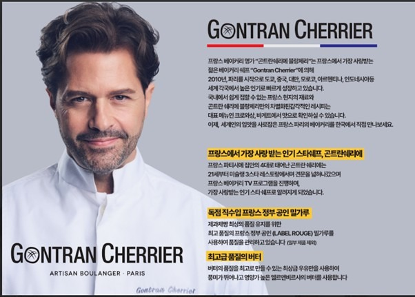

The Star Chef
Gontran Cherrier
프랑스 파티시에 집안의 4대로 태어난 곤트란 쉐리에는 21세부터 미슐랭 3스타 레스토랑에서 견문을 넓혀나갔으며, 프랑스 베이커리 TV 프로그램을 진행하며 가장 사랑받는 인기 스타 쉐프로 알려지게 되었습니다.
그의 빵에 대한 열정과 철학은 전 세계인들에게 사랑받는 곤트란쉐리에만의 특별한 맛을 만들어냈습니다.
미슐랭 3스타 레스토랑 경력
프랑스 정부 공인 밀가루 (Label Rouge)